Before entering the maze, make sure you read the part with the instructions and find out what the obstacles are ("How to Do an Open-Wall Maze")! Once you're ready, just click the title bar.
Welcome to my maze website! I built this maze to answer the question: what would you end up with if you changed the rules for going through a maze? What if, instead of following a corridor, you continued straight until hitting something? Try it.
Instead of turning continuously, you must continue straight, following the grid lines, until you hit a wall. When you hit a wall, you may turn depending on what walls are around you.
When you open this website, the first sample maze is loaded automatically, though you can also create your own maze, save it, and load it again!
Have fun creating and solving mazes!
A sample maze (numbers explained on left) |
| 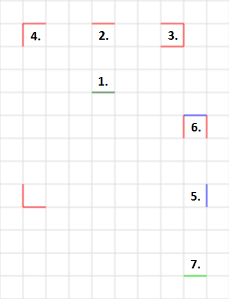 |
Solution to sample maze |
| 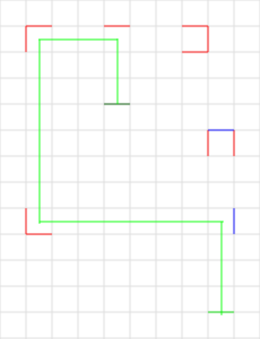 |
Here is a sample maze (on the right). Let me walk through the numbered obstacles one at a time, so you know what to do.
| 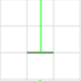 |
1. This dark green line is the beginning. You start upwards from this spot. If you are creating your own maze, you must place a beginning and an end line in the maze creator. |
| 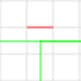 |
2. This is an ordinary wall. When you come from below, you are forced to turn either right or left. |
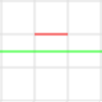 |
Note: if you were to come at the obstacle from the right or left instead, you would not be presented the turn because you would have missed the obstacle. |
| 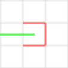 |
3. This is a dead end! In an open-wall maze, you reverse directions when you hit one. |
| 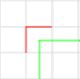 |
4. This is a forced turn. You are presented only one direction when you hit it, so the maze does not pause. |
| 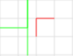 |
Note: if you were to come at the obstacle from behind, this would be an ordinary wall with two choices. |
| 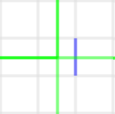 |
5. This blue line is a permeable wall. In addition to the two ordinary choices you have, you may also choose to continue forward. |
| 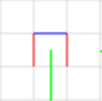 |
6. This is a permeable dead-end. Because the back of the dead-end is permeable, you may choose to turn around or continue forwards. |
| 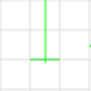 |
7. This light green line is the end! Goncratulations, you win! Note: there can only be one beginning, but there may be multiple ends. |
The open-wall or ‘hay-bales’ maze is a favorite invention of mine. It's more like a corn maze than anything else: you’re never quite sure where you’re going to end up! An open-wall maze is more difficult than a regular maze and takes more time to solve.
I first thought of the idea after visiting Mount Vernon (George Washington’s home) when I was about 13. At the plantation, there was a maze set up using hay bales. It was like a corn maze, except there was a catch: you were only allowed to turn when you hit a wall. Otherwise, you were required to continue straight. The maze was tricky. I made it through, but it required me to think.
The maze fascinated me. It dawned on me that this maze could easily be recreated using graph paper in the same way that a corn maze could be ‘drawn’ on regular paper. I created the system of walls and turns that you see in my maze here. I also added a ‘permeable’ wall where you can also choose to go forward, just to make things more interesting. I started drawing ‘hay-bales’ mazes on graph paper and challenging others with them.
Now I have created a digital version of an open-wall maze that makes it easier to stay in-line. I think it makes more sense in a browser, because you can see your progress on the page.
Below, I have included a few of my old mazes. The one on the left was drawn around 2000-2003. It incorporates a few additional obstacles that I have not included in later mazes (they were too confusing). The second maze was drawn in 2013 and then digitized with MS-Paint.
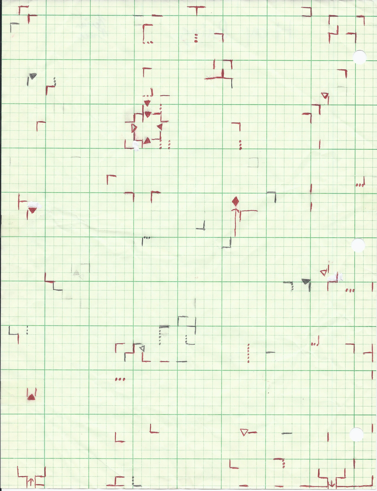 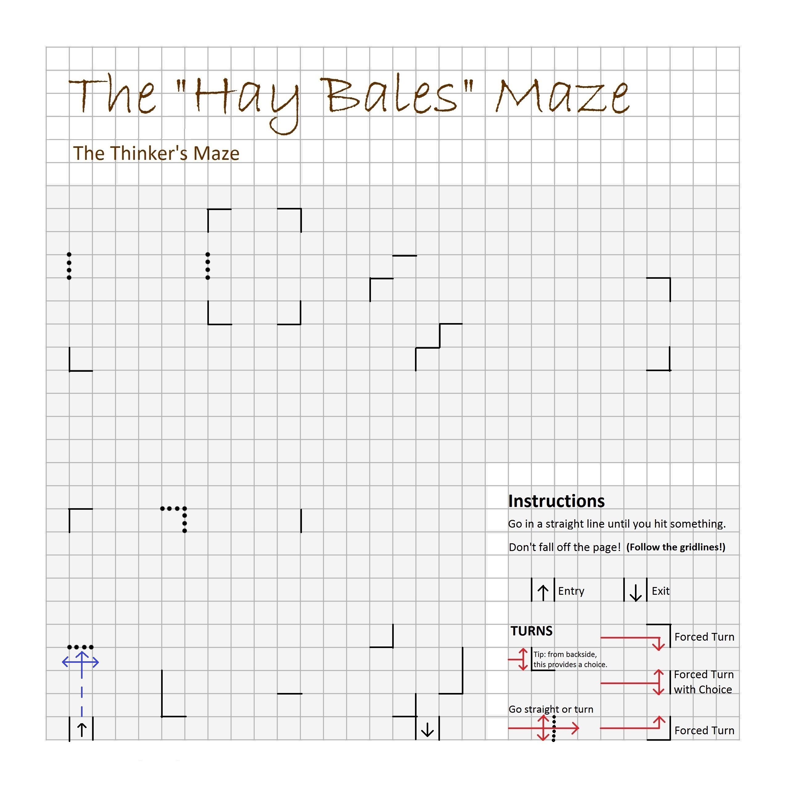